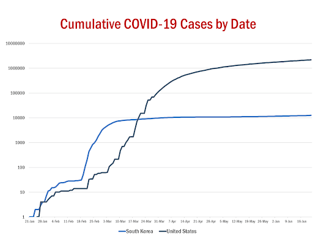
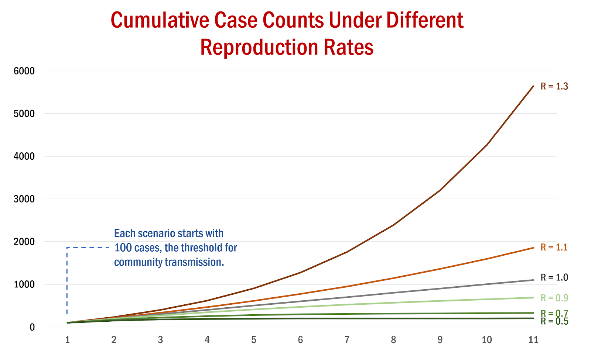
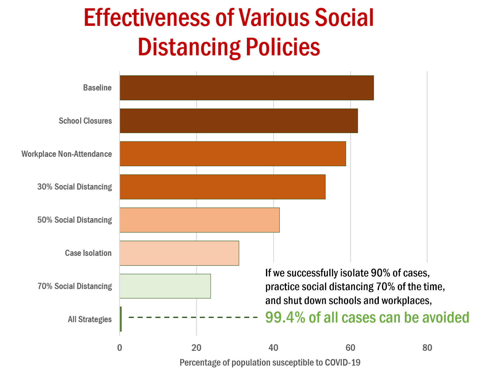

COVID-19 in the United States and South Korea: Why America failed in containing the pandemic
Ryan Liu & Albert Oh. 6/28/2020
As the COVID-19 pandemic stretches into its sixth month, many countries around the world are cautiously returning to normal life, attempting to maintain a delicate balance between public and economic health. However, this has been met with varying success, perhaps most clearly seen in the stark contrast between the progression of the virus in the United States and South Korea.
It’s hard to recall the beginning of March when the two countries were both experiencing their first major spikes in case counts. Yet, in the subsequent days and weeks, governments of each country adopted radically different policies, a reflection of the vast divide between the individuality central to the American identity and the collectivist mindset of South Koreans. While both nations have managed to remain afloat, it is undeniable that South Korea has seen much greater success in containing COVID-19.

In the first week of March, Korea had 50 times more cases than in America. Now, the situation is reversed: the United States has over two million cases, while Korea only has 12 thousand. (Data from Worldometer)
In the first week of March, Korea had 50 times more cases than in America. Now, the situation is reversed: the United States has over two million cases, while Korea only has 12 thousand. (Data from Worldometer)
Decoding infections disease models
Everyone remotely interested in the news has observed the wild fluctuations in the predictions of the United States COVID-19 forecasting model over the past few months, from a high of over a million deaths to an already-surpassed low of 60 thousand. As of June 27, the current death toll is 127,000 and continues to rise in America. Meanwhile, in Korea, there have only been 282 deaths, with only ten fatalities in the last three weeks.
We know that the elderly and those with underlying health conditions are much more likely to die from COVID-19. But how does the government determine the overall trajectory of case numbers and fatalities for an entire nation?
There are dozens of variables in these models, but epidemiologists are all ultimately using one single algorithm: a system of differential equations. This essentially means that researchers are estimating how different factors, such as travel patterns or weather, will change over time, and how that will impact the spread of the disease.
This culminates in a single number: the R0 rate. This metric, also known as the reproduction number, describes the average number of people that will be infected by a person that has the disease. The only way to end the pandemic will be to reduce and sustain the R0 rate below 1, where each infection cycle will contain fewer cases.
The initial outbreak in Wuhan had an estimated R0 value of between 2.2 and 2.7, with each infection cycle being approximately four days -- this means that it only takes approximately 3.3 days for that value to be doubled, which suggests that it would only take 100 days after the first infection for the entire world to have caught COVID-19 at least once. Fortunately, this did not happen -- through a series of draconian measures and a 76-day citywide lockdown, R0 rates were quickly brought down to approximately 0.3, ending the epidemic almost as quickly as it had started.
As the pandemic progresses throughout the world, epidemiologists are able to gain greater insight into the evolution of COVID-19 in and across populations, and the impact of various factors such as the availability of personal protective equipment on the long-term R0 curve. Due to the extreme differences between COVID-19 and other coronaviruses such as SARS or MERS, initial models were extremely inaccurate; even now, half a year after the first case was reported, models are little more than a representation of current trends.

Even small changes in the R0 value over a couple of
infection cycles can lead to extreme differences in case counts,
especially when R0 is high.
What did America do wrong?
When COVID-19 was first detected in the United States in late January, it is likely that many cases have already spread unnoticed, therefore establishing community transmission. The lack of a centralized healthcare institution in America and the nation’s vast geographical expanse make it virtually impossible to gather reliable data of the beginning of the pandemic; however, statistics from the European Union and other developed countries suggest that metropolitan centers would have initially started with a R0 value of 3.5 to 4.5, while rural areas were slightly better off with a rate of 1.2 to 2.4.
Throughout February and the beginning of March, most states adopted the federal government’s laid-back attitude towards containing the virus. With only a few hundred reported cases, authorities mistakenly believed that community transmission was not sustainable and simply issued travel advisories for China and other nations experiencing outbreaks. However, these numbers were simply a reflection of the severe lack of testing kits available -- by March 1, only 399 people had been tested for COVID-19, and 97% of the tests were returned positive.
Meanwhile, in South Korea, a sudden outbreak of cases in mid-February led to rapid investigation by the government, who determined the site of origination just two days later -- the Shincheonji Church of Jesus in Daegu. Immediately, social distancing guidelines were enforced, face masks were distributed and worn by the vast majority of citizens and most crucially, tens of thousands of tests were conducted each day through an incredibly effective contact tracing campaign. Within three weeks, the outbreak was contained, with less than 50 people contracting COVID-19 per day.
Despite never enforcing any mandatory stay-at-home orders, South Korea brought its R0 value from an initial high of 10 down to 0.7, and managed to suppress its rise since. America has not been nearly as fortunate: with the disease spreading to new cities and sparking new waves every other day, over the past 100 days, only 7 have had an estimated R0 of less than 1.
From an economic standpoint, there is no significant difference in the strategies pursued by both nations. Compared to the rest of the world, both governments have sought to minimize disruption in the economy by leaving self-protection largely to the individual. Stimulus packages and a mature technology infrastructure have facilitated a relatively smooth transition for those unable to work at physical offices and hospitals have staved off being overwhelmed by cases. An argument can be made that Americans have actually experienced stricter regulations than their Korean counterparts -- many cities and states issued stay-at-home orders for extended periods of time, and a significant number of restaurants and other businesses were shuttered.
Many Americans have come to realize this, and are justifiably frustrated. However, the nation is failing to see the root of the problem: the politicization of a public health crisis.
Moving forward
The American identity is encapsulated in three words: freedom, individuality and opportunity. This ideology, that one should be free to follow and express their own beliefs freely, has been the propelling force behind the United States’ rise to becoming the sole global superpower for the past century. However, the past few months have seen millions of Americans abuse their rights, from the average citizen to the leaders of the United States.
Even as tens of thousands of Americans get infected with COVID-19 each day, many protestors continue to refuse to wear face masks or oblige by social distancing measures, drawing on the populist conception of personal liberty. The current administration’s inability to coordinate a nationwide effort to fight the pandemic has led to a fragmented system of policies and recommendations that ultimately fail to impose any real long-term changes to our society. Perhaps most worrying is the rejection of science by many populists in favor of “the people’s interests” -- the refusal to sacrifice any personal freedom for the common good has allowed the virus to proliferate throughout communities, even as the vast majority of Americans are under self-imposed lockdown.

(Data from Australia Department of Health)
Perhaps it is time for the United States to look outwards, and learn from the success of other countries. We must set aside ideological differences and start learning to work with the government, rather than blindly fight it. Although we may not be able to replicate the efficiency of South Korea in defeating the coronavirus, this nation will only succeed when it no longer battles itself, but rather the enemy.

Ryan is a rising junior at Northwood High School. Through InterSTEM, he hopes to spread his passion for STEM to less fortunate communities and create a platform where similarly-minded students can interact across the world. Ryan is most interested in mathematics and physics, and serves on the board of many school science clubs. Outside of STEM, he enjoys playing the piano, debating politics, and reading philosophy.